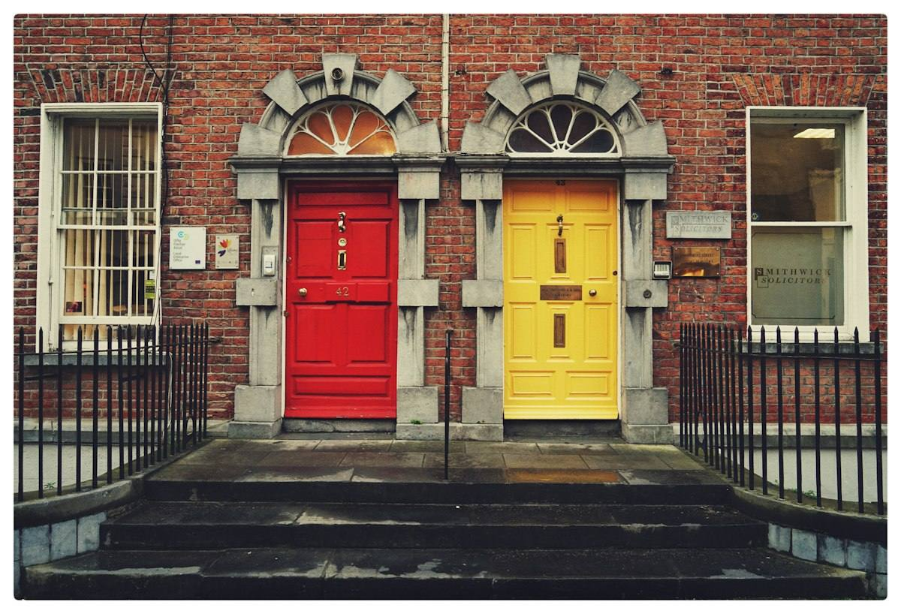
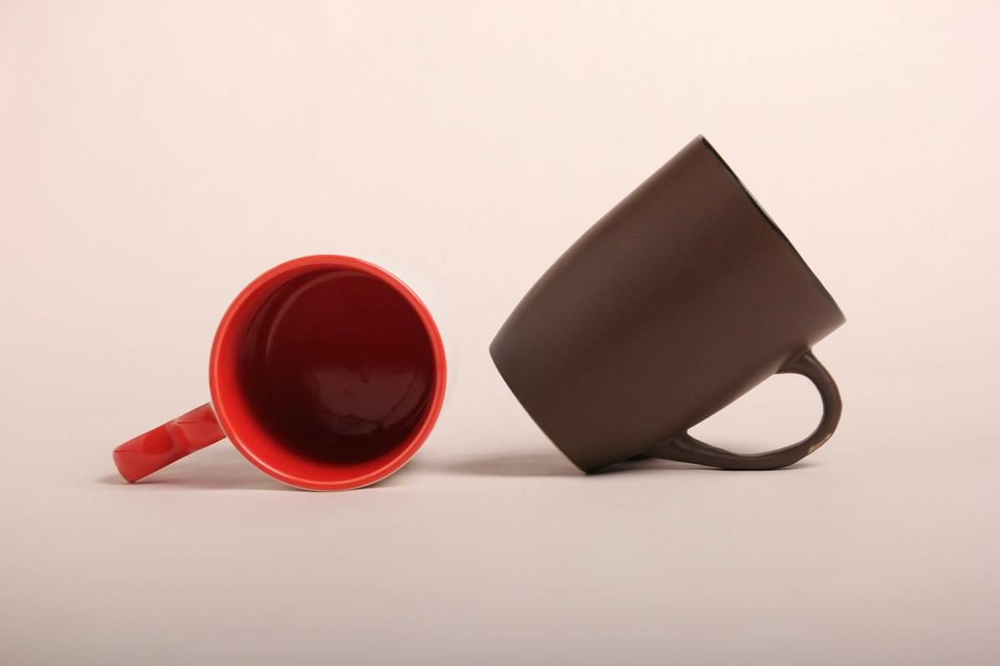
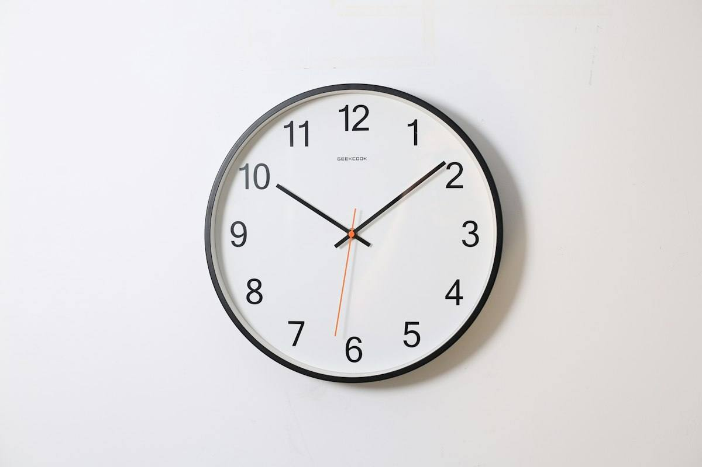

Warm-up · Which door do you open?

Today you do not only describe. You compare two options and decide.
Which door do you open?
Teacher notes · §1 Warm-up
Pedagógica
- Presenta las dos puertas (A y B) con los números en pantalla. El alumno responde con cheaper / faster sin explicación previa: es la primera exposición natural a los comparativos (Block 2).
- Si dice more cheap o more fast, haz recast: "A is cheaper." Sin corregir en público. Máximo 5 minutos.
- Idea fuerza: decidir = comparar + elegir + justificar.
Engagement
- "Block 1 fue entender. Block 2 es comparar y decidir."
- Pregunta final: "Which do you choose? Why?"
Crecimiento
- Registra qué comparativos produce el alumno sin ayuda (cheaper, faster).
- Riesgo: Seguro. Temperatura: Mild.
Vocabulary · 12 words for comparing

Tap to flip · listen to the word and the example
0 / 12 flippedDead Words on the Board
Dead 0 / 101. Talk with your partner for 4 minutes about the topic. 2. Every time someone says a board word correctly in a complete spoken sentence, tap it: it dies. 3. Goal: kill all 10 words as a team.
The board
Teacher notes · §2 Vocabulary
Pedagógica
- Voltea cada tarjeta: tú dices la palabra, el alumno repite y da su ejemplo. Palabras difíciles: trade-off y worth it.
- VOC-04 Dead Words on the Board (ELIMINACIÓN): 10 palabras en el tablero; se "borran" cuando alguien las usa correctamente HABLANDO, en una oración completa. Meta colectiva: tablero vacío. Grupo: parejas y una meta del grupo. 1:1: tú también hablas y puedes borrar palabras tuyas.
- Si una palabra no muere en 3 minutos, pregunta: "What is a sentence with this word?" Sin comparativos aún en este bloque: aparecen en §3.
- La puntuación premia producir inglés, no la velocidad.
Engagement
- "¡Mata esa palabra!" cada vez que cae una.
- Si el tablero queda vacío antes del tiempo, el grupo elige un tema nuevo.
Crecimiento
- Anota las palabras más resistentes: son las que no pasaron a producción activa.
- Venta: el tablero de palabras muertas es un formato fácil de mostrar en una demo.
Grammar · Compare two options
Read the chat. Which four patterns compare?

Mug A is cheaper than Mug B.
Mug B is more durable than Mug A.
Mug B is not as cheap as Mug A.
Mug A is the cheapest. Mug B is the most durable.
Compare two options
1 · Short words
Supplier A is cheaper than Supplier B.
2 · Long words
Supplier B is more reliable than Supplier A.
3 · The top one
A is not as fast as B. B is the fastest.
| Statement, negative, question | Notice | |
|---|---|---|
| + | A is cheaper than B. B is more reliable than A. | Short: -er. Long: more. Always than. |
| − | A is not as fast as B. A isn't more reliable than B. | not as + adjective + as. |
| ? | Which option is cheaper? Is A faster than B? What is the most important factor? | Which / Is + comparative. |
Irregular: good → better → the best. bad → worse → the worst. Hypothetical advice (should, could) comes later.
¿Qué es? La forma de comparar dos opciones: adjetivo + -er than (cheaper than), more + adjetivo + than (more reliable than), not as … as y el superlativo the cheapest / the most reliable.
¿Cómo se usa? Supplier A is cheaper than Supplier B. Supplier B is more reliable than A. A is not as fast as B. B is the fastest.
¿Para qué hoy? Para decidir entre dos opciones con números: precio, tiempo y calidad.
Cuidado: no se mezclan: more cheaper, more faster → cheaper, faster. Y se dice than, no that.
Choose the missing word
Same Fact, Three Frames
Context 0 / 4Points 0The fact is always the same: Supplier A $100 and 5 days. Supplier B $140 and 2 days. 1. Read the context. 2. Choose the frame that fits it. 3. Say WHY with because.
Mistakes at this level
Teacher notes · §3 Grammar
Pedagógica
- Un solo punto de lengua: comparar dos opciones (-er than / more … than / not as … as / the -est, the most). Explicación continua ≤5 min; el botón en español está oculto por defecto.
- Practice A es mecánica (≤1/3 del bloque). GRM-12 Same Fact, Three Frames (RANKING): un mismo hecho dicho de tres formas; el grupo decide cuál corresponde al contexto y DEFIENDE el orden con because. Claves: contexto 1 → Frame 2 · contexto 2 → Frame 1 · contexto 3 → Frame 3 · contexto 4 → Frame 2.
- Errores prioritarios: more cheaper y that en lugar de than. Márcalos en voz alta cada vez.
- Límite de nivel: sin should / could / would (Block 3).
Engagement
- "El hecho es el mismo; el marco cambia con el contexto."
- Pide una oración propia con the most de su trabajo.
Crecimiento
- Registra qué comparativos irregulares (better, worse) produce el alumno sin ayuda.
- Venta: este formato (mismo dato, tres marcos) funciona muy bien en cursos de negociación.
Reading · Two offers, one email
Find the facts
Teacher notes · §4 Reading
Pedagógica
- Primera lectura en silencio (1 min) para identificar CUÁL proveedor es más barato y CUÁL más rápido. Segunda: subrayar mentalmente cheaper than, not as reliable as y the most important.
- Texto de 80 palabras, nivel B2 (tope 100). Reutiliza reliable, quality y recommend.
- Pregunta oral extra: "Do you agree with Luis? Why or why not?" (sin should).
Engagement
- "¿Qué eligió Luis? ¿Y tú?"
Crecimiento
- Tarea opcional: escribir un correo de 5 líneas comparando dos opciones reales.
Speaking · The escalation debate

Topic: Supplier A ($100, 5 days) or Supplier B ($140, 2 days)? 1. Draw your side. 2. Three rounds on the SAME topic: opinion, evidence, concession. 3. Only Round 3 scores. 4. Points come from producing English, not from speed.
Round 3 score
Rounds 1 and 2 do not score. Round 3 does.
12 questions · always 2 follow-ups
Teacher notes · §5 Speaking
Pedagógica
- SPK-05 Escalation Debate (ESCALADA): tres rondas sobre lo MISMO. R1 opinión (I think… because…) · R2 opinión con evidencia (números: precio, días, cajas) · R3 opinión con concesión (You are right that…, but…). Solo puntúa la ronda 3.
- Grupo: parejas con lados sorteados (A barato / B rápido). 1:1: tú tomas el lado contrario. 2 minutos por ronda. Sin notas.
- Marca 2 aciertos y 3 errores repetidos (more cheaper, that por than). Feedback en §7.
- Límite de nivel: la concesión usa You are right that…, but…; sin hipótesis ni should.
Engagement
- "Cada ronda sube un escalón: opinión, evidencia, concesión."
- Pide el cambio de lado en la última ronda si hay tiempo.
Crecimiento
- Registra puntos de la ronda 3: indicador de argumentación con concesión.
- Venta: la concesión explícita es una habilidad de negociación vendible por sí sola.
Mission · The supplier decision

The Supplier Decision
You are the buyer. Three decisions are on your desk today. For each one, compare the two options with numbers, say the trade-off, and decide.
Group: each case goes to one student in a breakout room. Your partner asks “Is it worth it?” once per case. Rotate every 3 minutes.
1:1: you brief the teacher. The teacher asks “What is the trade-off?” once per case.
Success: 3 decisions, each with a comparative, numbers, a trade-off and a reason.
Teacher notes · §6 Mission
Pedagógica
- Marca cada movimiento solo cuando el alumno lo dice sin leer la tarjeta.
- Evidencia observable: comparativo con than, números como evidencia, trade-off con but y decisión con because. Clave visible solo en Teacher view.
- No interrumpas: el feedback va en §7.
Engagement
- Anuncia en voz alta: "__ of 12 moves. Decision made!"
Crecimiento
- "In Session 10 you decide: is faster always better?"
- Conecta con la tarea final: una recomendación de compra de 3–4 minutos.
Wrap-up · Better the second time
✓ Success
↑ Upgrade
✎ Repair
↻ 2nd try
Repeat one briefing with the teacher. Use the upgrades. Same task, better English.
60 seconds · 5 questions
My second try is better because…
You can compare two options and decide.
Homework: compare two real options you have (two suppliers, tools or routes) in 5 sentences. Use numbers and make one decision. Next: Session 10.
Teacher notes · §7 Wrap-up
Pedagógica
- Máximo 2 aciertos y 3 correcciones de alto valor, anónimas. Luego segundo intento de una decisión contigo.
- Exit quiz en voz alta.
Engagement
- Compara con el §1: "Minute 1: cheaper and faster. Minute 58: a decision with numbers and a trade-off."
Crecimiento
- Registra: palabras muertas, puntos de la ronda 3 y comparativos irregulares usados.
- Antes de S10: pide un ejemplo real de 'rápido vs. calidad'.